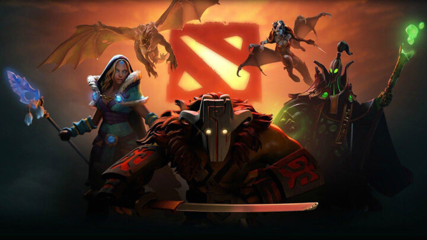
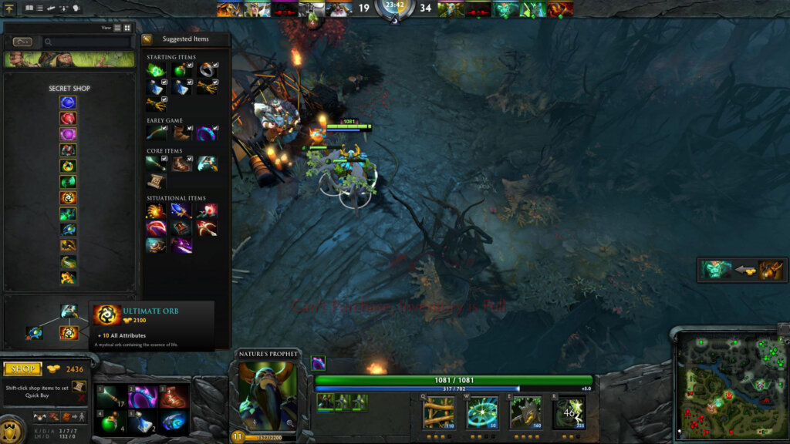

Dota 101 – Basic Item Builds
Looking to get into Dota 2 but no idea where to start? We’ll get you up and running with our Dota 101 guide. Today we’ll talk about item builds.
So you decided to get your feet wet and give the game of Dota 2 a try. Yet once you get into the match, you see the list of items and get totally overwhelmed. What are all these items and which ones should you be buying?
The easy way
First thing you should probably know, is that while buying the correct items is a pretty important part of the game. It is also something a lot of very smart people have already thought about a lot. And like Newton said, it is by standing on the shoulders of the giants who came before us, that we can reach the highest peaks of our achievement. Therefore you might want to check out Dota 2’s ingame guide system. Simply click the guide button, and select one of the top rated guides for the hero you are playing.
Most likely you will find a guide by either “Tortedelini” or “Immortalfaith”, two people that are known for making very good and reliable guides for pretty much every hero in the game. With these guides turned on you will be granted a small selection of items you should aim to buy in specific parts of the game. With the tooltips you will be granted some extra information on how to make use of these items, and when to buy them.
Consumables
However, at some point we all want to take up the reins ourselves. Foregoing the guides, first you will need to learn the value of consumables. These are items that disappear once used, like Teleport scrolls, Tango’s, Salves and Claritys. While these items might seem like a bad investment since you won’t be able to make use of them long term, they play an essential part in the early stages of the game. Since you won’t have the money early on for bigger HP and Mana sustain items, it is these consumables that are going to provide that goodness. Tango’s will be your most efficient way of sustaining your HP, Clarities for mana.
However if you don’t have time to wait for the slow tick of resources these items provide, you might want to look into Salve’s and Mango’s. Both items provide more of an instant burst of HP or Mana, allowing you to get back into the fight quickly. And of course, make sure you always have at least two teleport scrolls on you at all times, since mobility is key to winning in the game of Dota 2. So don’t forget those boots either, you will need the movement speed
Magic Wand
One of the cheapest but also best items in the game is the Magic Wand. For a very small amount of money you will receive an item that gets charges whenever enemy spells get used around you. By activating the magic wand you can instantly regain HP and mana for every charge you have accumulated. Something that might seem small, but having an instant HP and Mana boost can turn around many fights early on. Get some stacks on your wand, bait your enemy into a fight, and surprise them with a big HP boost once you get low to win the fight.
Core items and expansion items
Most dota heroes are designed in a way where they can do one thing really well, but kinda suck in a lot of other areas. Core items often form plugs to fix the holes in a heroes design. For example look at Phantom Assassin, an incredible carry with crazy damage output through her ultimate. However she can only hit single targets and is very squishy. Therefore the core items this hero needs are a battlefury to provide her with AOE attacks so she can farm fast, and a Black King Bar allowing her to get her damage out during fights without getting bursted down. After you get these items you can simply get extra items to counter specific opponents in your games. Like a basher to lock down the elusive Anti-Mage.
This is the key in deciding on your item builds. First fix the holes in your own heroes design with core items, and only then counter your opponents heroes. Force them to play your game, not the other way around. Because if you are always responding to your opponents moves, you will alway be one step behind. Decide what game you want to play, and make them respond to your moves and items instead. That is how you gain tempo, momentum and another +25 to your MMR score.